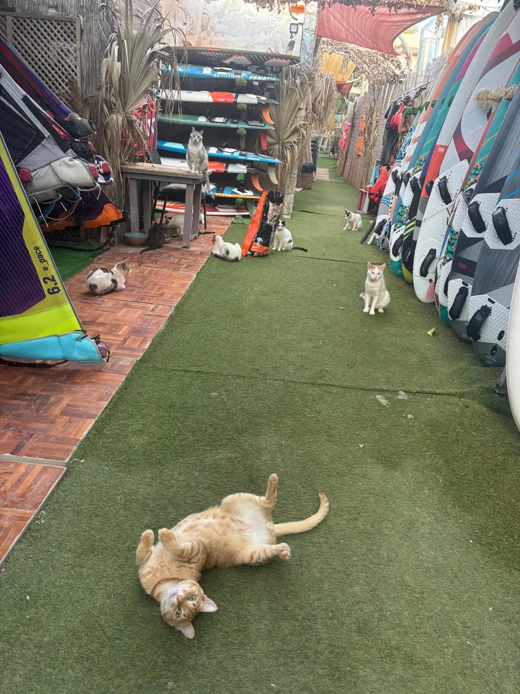

Die Route hinter der Fürsorge.
Eine visuelle Reise durch die Orte, an denen aus einzelnen Fütterungen eine tägliche Verantwortung für mehr als 250 Tiere entsteht. Nicht als dramatische Inszenierung, sondern als präziser Blick auf Nähe, Wege, Unsicherheit und gelebte Versorgung.

Wo Fürsorge weitere Menschen erreicht
Die Windsurfschule zeigt, wie aus Margos persönlichem Engagement ein kleines lokales Unterstützungsnetz entsteht.
Eine Route. Viele verschiedene Formen von Verantwortung.
Die Bilder zeigen keine einheitliche Infrastruktur. Manche Tiere leben in geschützten privaten Bereichen, andere an offenen Futterstellen, in Büschen oder unfertigen Gebäuden. Genau diese Unterschiede müssen später im Wissens-, Vermittlungs- und Versorgungssystem abgebildet werden.
Die Farm ist als weiterer Versorgungsort bereits vorgemerkt. Sobald Lage, Tierzahl, Fotos und Kontext vorliegen, wird sie in die Route eingeordnet. Auch die bestehenden Stationen können später durch Videos, bestätigte Tierzahlen und einzelne Tiergeschichten vertieft werden.
Zur öffentlichen Seite